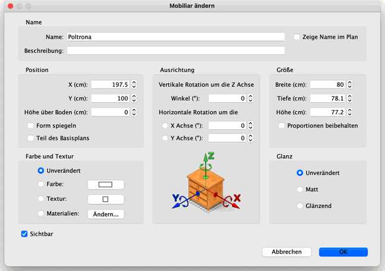
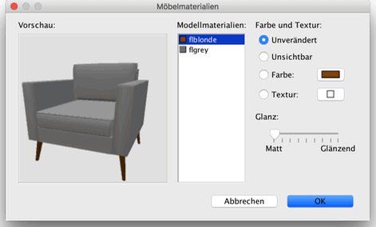

|
|
Mobiliar �ndern | ||
|
Sie k�nnen die Position, die Gr��e und die Winkel von Mobiliar �ndern. Entweder mit
der Maus oder �ber das Mobiliar > �ndern… Men�. Sperren Sie den Wohnungsplan über Plan > Plan sperren um nicht versehentlich Mobiliare und andere Items auf dem Wohnungsplan gleichzeitig auszuwählen. Dies verhindert die Auswahl von Wänden, Räumen, Bemaßungen, Texten, Türen und Fenstern, und erlaubt Ihnen so, Mobiliar leichter zu arrangieren. Ein zweiter Klick auf Plan sperren oder das hinzufügen eines weiteren Gegenstandes zum Wohnungsplan hebt die Sperrung des Wohnungsplanes auf. Um die ausgew�hlten Mobiliare nun zu bewegen, bewegen Sie den Mauszeiger �ber eines der Mobiliare, dr�cken sie die linke Maustaste und bewegen die Maus zu der Stelle, wo das Mobiliar stehen soll. Anschlie�end lassen Sie die Maus los (Drag&Drop). Sie k�nnen au�erdem auch die Pfeiltasten benutzen, um Ihr Mobiliar zu verschieben. Wenn sie ein Mobiliar ausgew�hlt haben und der Mauszeiger ist �ber einer Wand wird das Mobiliar entsprechend der Ausrichtung und der Dicke der Wand gedreht und skaliert wenn es sich um eine T�r oder ein Fenster handelt. Andere Mobiliare werden so ausgerichtet, dass die R�ckseite entsprechend der Wand ausgerichtet ist. Sollten Sie eine Auswahl von mehreren Mobiliaren als ein einziges Mobiliar behandeln wollen (Zum Beispiel einen Tisch mit Stühlen), wählen Sie Mobiliar > Gruppieren aus dem Menü. Wenn ein Mobiliar oder eine Gruppe von Mobiliaren ausgew�hlt ist, dann k�nnen Sie dessen Gr��e, H�he �ber dem Boden und Winkel mit einem der vier Anfasser ver�ndern, die an den Ecken des ausgew�hlten Objektes erscheinen.
|

|
|
Wenn der Mauszeiger �ber einer dieser Ecken ist, ver�ndert er sein Aussehen um Ihnen zu zeigen, dass Sie nun mit Ziehen das entsprechende Attribut des gew�hlten Objektes ver�ndern k�nnen. W�hrend Sie die Maustaste gedr�ckt halten, wird ein Tooltip angezeigt, der den Wert Ihrer �nderung anzeigt. Das Mobiliar, welches mit der Maus ver�ndert wird, wird parallel im Wohnungsplan und der 3D-Ansicht aktualisiert. Ein Mobiliar kann ebenfalls in einem Dialog ver�ndert werden. Dazu doppelklicken Sie auf ein Mobiliar im Wohnungsplan oder in der Liste, oder in dem Sie Mobiliar > �ndern… ausw�hlen, nachdem Sie ein Mobiliar ausgew�hlt haben. 
In dem Dialog Mobiliar �ndern k�nnen Sie den Namen des Mobiliars, die Anzeige
des Namens im Wohnungsplan, die Beschreibung, die X- und Y-Koordinate seines
Mittelpunkts, seine H�he �ber dem Boden, ob es gespiegelt wird, ob es Teil des
BasisWohnungsplans ist, seine Breite, Tiefe und H�he, die Stellung von beweglichen
Teilen die Farbe, Textur, Materialien und den Glanz, die Sichtbarkeit, die
Rotationswinkelsowie den Glanzgrad �ndern. Es ist nicht m�glich T�ren, Fenster,
Treppen und Gruppen auf der horizontalen zu rotieren.
 Der Bereich zum Bearbeiten von Mobiliarmaterialien zeigt die Liste der bearbeitbaren Materialien sowie eine 3D-Vorschau Ihrer Farb- und Textur�nderungen an, da Materialnamen nicht immer intuitiv verst�ndlich oder �bersetzt sind (wie bone2 an Stelle von Matratze oder flyellow an Stelle von Rahmen in der vorherigen Abbildung). Fall n�tig k�nnen sie mehr als ein Material in der Liste anw�hlen und �ndern. Sie k�nnen das Objekt in der 3D-Vorschau auch mit der Maus drehen. Wenn sie in der Vorschau auf ein Teil klicken wird das entsprechende Material in der Liste ausgew�hlt. |
|